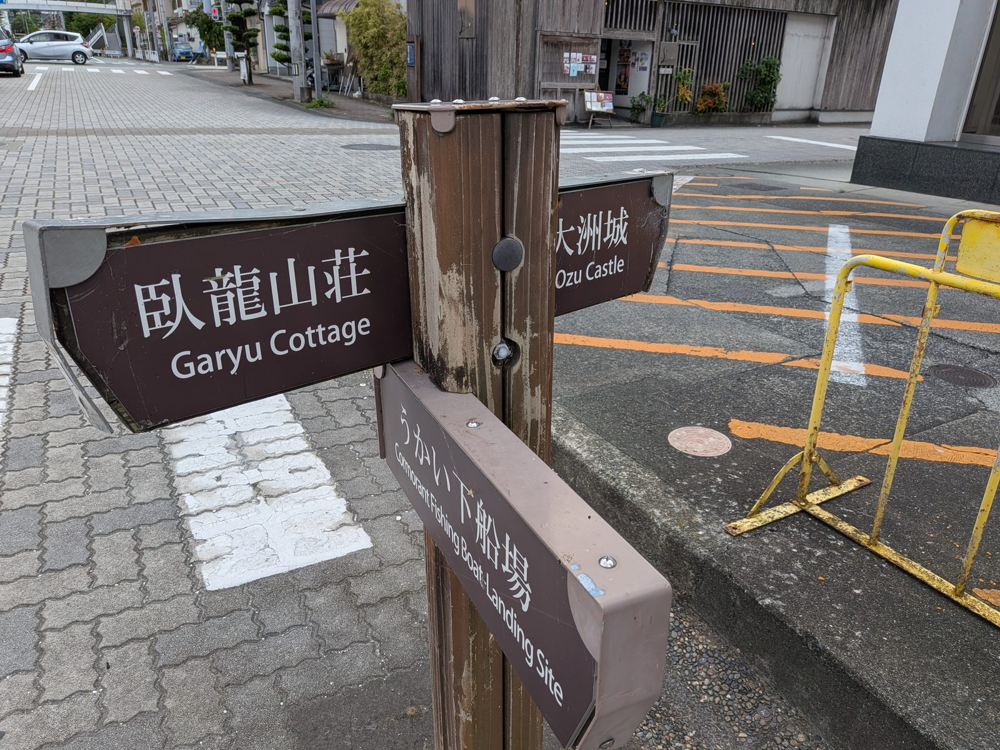

大洲のいま ・ 出典: 大洲のうかい公式サイト、大洲市公式ホームページ、大洲市観光協会（VisitOzu）、NIPPONIA HOTEL大洲城下町マガジン ・ 約8分で読める

要点
「うかい」という言葉は知っていても、乗ったことはない。地元でもわりとよくある状態だと思う。
調べてみたら、値段や時間より先に「集合場所と下船場所が違う」ことを知らないと詰む仕組みだった。初めての人向けに、予約から下船までを順番に整理しておく。
なお鵜という鳥そのものの話は鵜と肱川の生態系の記事に、名前が似ている城下町のはしご酒イベントはおおず夜まで迂回バルの記事にまとめてある。ここは乗り方だけを扱う。
公式サイトに載っている乗合船の行程はこうだ。
ここで一番大事なのが、最後の行だ。乗るのは臥龍山荘の下、降りるのは大洲城下。この２か所は約１ｋｍ離れている。
川を下るので当然といえば当然なのだが、集合場所に車を停めた人は、下船後にそこまで歩いて戻ることになる。
もう１つ、時刻の表記がサイト内で２通りある。トップページの行程表は「18:00 集合・受付開始」だが、予約ページには「17:50 受付締切」と書かれている。
どちらが正なのかは判断できなかったので、17時45分ごろにはあさもやに着いておくのが安全だと思う。
所要は乗船から下船まで２時間。川下りのコースは約2.7ｋｍで、途中に食事とトイレ休憩が入る。
飲み物や食べ物の持ち込みは自由だが、ごみは持ち帰りになっている。
料金表は２種類に分かれている。単に人数の違いではなく、集合場所も、予約先も、送迎の有無も違う。
乗合船は１人でも少人数でも乗れるタイプ。
貸切船は６人以上のグループ向けで、船代と料理代が別建てになる。船は４隻あって、大きさで値段が変わる。
貸切船は公式サイトからは予約できない。掲載されている９つの事業者（うめたこ本店、鹿野川荘、むらや、NIPPONIA HOTEL大洲城下町、ウエストリバーにし川、大石フーズ、旬菜麹屋 古酒オールディーズ、料苑たる井、割烹料理寿司店よねざわ）から１つ選んで、そこへ直接申し込む形になる。
料理の内容も値段も事業者ごとに違うので、実質的には「船つきの会食の予約」に近い。
そして貸切船は、乗船場も違う。集合はうかいレストプラザに18:20まで、18:30乗船で20:30に大洲城下で下船。こちらは乗船場と下船場が約２ｋｍ離れている。
２ｋｍ歩いて戻るのはさすがに厳しい、と思ったら、ちゃんと手当てされていた。
貸切船の利用者には無料送迎バスがある。運行は６月１日～９月20日（８月３日の川まつり花火大会を除く）。
| 方向 | 乗車場所 | 時刻 |
|---|---|---|
| 行き | 伊予大洲駅 | 18:10発 |
| 観光第一駐車場 | 18:20発 | |
| まちの駅「あさもや」 | 18:25発 | |
| うかいレストプラザ | 18:30着 | |
| 帰り（ＪＲ用） | 観光第一駐車場 | 20:10発 |
| 伊予大洲駅 | 20:20着 | |
| 帰り（通常） | 観光第一駐車場 | 20:40発 |
| 伊予大洲駅 | 20:50着 | |
| まちの駅「あさもや」 | 21:00着 | |
| うかいレストプラザ | 21:05着 |
帰りの便が２本あるのがポイントで、早いほうは「ＪＲ上り20:34にご乗車のお客様専用」と明記されている。
この便を使う人は20:00に下船する扱いになる。列車で来る人のために、下船時間ごと30分繰り上げる運用があるということだ。
注意点も書かれている。事前予約が必要で、貸切船を予約するときに「バスの利用の有無」「乗車場所」「乗車人数」を伝えること。
貸切船の利用客がいない日は運行しない。そして車で来た場合は運転手のみの送迎になる。
駐車場は観光第一駐車場、まちの駅「あさもや」、うかいレストプラザの３か所が案内されている。
締切は２日前だ。ただし、つまずきやすいところはそれだけではない。全部で３つある。
１つ目が、その締切だ。公式サイトの例示が分かりやすい。「７月１日のご予約は６月29日までにお願い致します」。
翌日および当日の予約は、フォームではなく電話での問い合わせになる。
２つ目。フォームを送っただけでは予約は取れていない。送信すると自動返信で「予約受付メール」が届くが、確定は大洲観光総合案内所から「予約完了メール」が届いた時点で、それが送られてくるのは１～３日後とされている。受付メールを予約完了と勘違いすると事故になる。
３つ目。６月１日と８月３日は、そもそも乗合船の予約を受け付けていない。
６月１日は鵜飼開き、８月３日は川まつり花火大会の日にあたる。
うかいの初日に乗れないというのは、言われてみないと気づかない。
雨の日の扱いもはっきりしている。やむを得ず中止となる場合は当日の朝10時までに決定し、予約時の電話番号に連絡が入る。朝10時までに電話がなければ実施、と考えてよさそうだ。
せっかく乗るなら、何を見に行くのかは知っておきたい。
大洲のうかいは「合わせうかい」という方式で行われる。かがり火をたいた鵜匠の船と、客が乗る屋形船を並走させながら川を下る。
公式サイトはこれを「大洲発祥の“合わせうかい”」と書いていて、VisitOzuも「国内でも珍しい手法」と説明している。
鵜飼というと、岸から眺めるか、少し離れた観覧船から見るものというイメージがあった。
大洲は違う。横に並んで、同じ速さで下る。だから鵜が水しぶきを上げて鮎をくわえる瞬間が、手が届きそうな距離で見える。売りは景色ではなく距離だ、ということになる。
規模も具体的に書かれている。大洲市の説明によると、鵜匠が操るのは元気な５羽の鵜。
くちばしの先端が鋭い鍵状になっていて、側面はカミソリのようになっている、という説明もある。
歴史については、市はこう書いている。「昭和32年に清流肱川で観光鵜飼は始まりました」。
漁法としての鵜飼自体は『古事記』『日本書紀』にも記述があり1300年の歴史があるとされるが、大洲で観光事業として始まったのは1957年で、2026年で70年目にあたる。
大洲のうかいは、岐阜県岐阜市の長良川、大分県日田市の三隈川と並んで日本三大鵜飼に数えられる。せっかくなので、残り２つの条件も調べて並べてみた。
| 大洲（肱川） | 岐阜（長良川） | 日田（三隈川） | |
|---|---|---|---|
| 期間 | 6/1～9/20（112日） | 5/11～10/15（158日） | 5/20～10月末 |
| 大人・食事なし | 4,000円 | 4,200円（繁忙日5,100円） | － |
| 大人・食事つき | 8,000円（弁当付） | 飲食代は別 | 11,000円 |
| 小人 | 3,000円（４歳～小学生） | 2,100円（３歳～小学生） | 5,150円（子供会席） |
| 貸切船 | 28,600～49,500円（10～18人） | 53,600円～（15人乗り） | 最少催行４名 |
並べてみると、性格の違いが数字に出ている。
大洲は期間が一番短い。112日で、長良川より46日も短い。夏の２か月半に集中している。
一方で値段は三大鵜飼の中で一番安い。食事なしなら長良川より200円安く、食事つきなら日田より3,000円安い。
貸切船も、長良川の15人乗り53,600円に対して大洲の18人乗りが49,500円で、１人あたりで見るとかなり差がつく（長良川は約3,573円、大洲は約2,750円）。
ただし小人料金だけは大洲が高い。長良川は大人4,200円に対して小人2,100円ときっちり半額だが、大洲は大人4,000円に対して小人3,000円で、25％引きにとどまる。
家族４人（大人２＋小人２）で乗ると、大洲14,000円、長良川12,600円で逆転する。子ども連れだと、実は大洲のほうが割高になる。
「で、実際どのくらい人気なの？」は当然知りたくなるところなので、乗船者数を探した。
見つけられなかった。大洲市が毎年公開している「主要観光施設入込み状況調」には９施設が載っているが、うかいは含まれていない。
観光まちづくり戦略会議の資料にも、うかい単独の乗船者数は出てこない。
市や観光協会が実績を公表している資料は、探した範囲では確認できなかった。
分かるのは間接的な情報だけだ。市の説明には「見物客は年を追うごとに増え」とあるが、根拠となる数字はついていない。
貸切船を扱う事業者が９社あること、うち１社は分散型ホテルのNIPPONIA HOTELであること、無料送迎バスが「利用客がない日は運行しない」と断っていること。
この３つを並べると、毎日満船というほどではなく、日によってばらつきがある規模だろうと推測はできる。ただし推測にすぎないので、そう書いておく。
値段でも期間でもなく、横に並んで下る２時間が大洲のうかいの中身だった。
三大鵜飼で一番安く、一番期間が短い。行くなら夏のうちしかない。